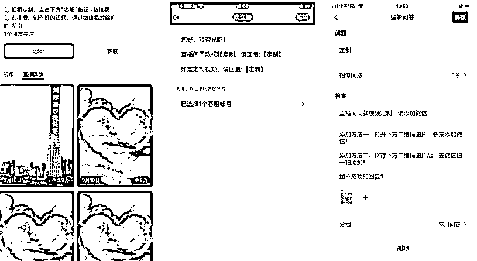

来源：https://qrm33w1izc.feishu.cn/docx/DGw1dYHSsohHu7x1AXhc4cQVnEN
早上收到一条信息，一个客户说我好久没有更新朋友圈了，我想起了刚过完年那段时间测试的一个小项目。
这个项目是偶然间发现的，项目不大，投入也不大，8 块钱成本，不到一个月赚了 2w 多，引流到微信几百人，单价 30 元，复购最多的有 20 单，比如下面这个朋友
我想要告诉大家的是，有需求，单价还可以，关键复购高，另外和直接带货不同的是，微信直接先收款，这个挺爽的，但是我现在没做了，之前做也是拿一些废号做的，主要是因为这个现在比较废号了，动不动扣分，本没打算分享这个项目的，但考虑到我在做的过程中，还是有一些好玩的地方，以及一些优化的步骤，可以给圈友参考一下。
细心的朋友可能发现了，我只是做了一个视频，然后发给客户就交付了，做一个视频大概是 1-2 分钟，我把这个项目叫做“视频定制”，就是根据客户的文案，修改视频里面的文字。
不知道大家有没有刷到过这种直播，直播间展示的是一段循环播放的广州塔视频，塔上面的文字写的是“一起生财有术”，哈哈开个玩笑，一般都是说，XX 我爱你，XX 我喜欢你，XX 生日快乐之类的文案，然后主播可以直接修改塔上面的文字。
是的，我就是做的这种直播，我也是无意间刷到的，那是刚过完年没多久，还没进入工作状态，打算刷刷视频，找找品之类的，有天晚上，刷到一个直播间，突然发现很新颖，因为之前刷到的基本都是带货的直播，这种确实没见过（生财思维，发现异常值），关键是上人真的好快，一下子 1-2w 的场观，互动也很强，底下一直在刷亦仁我爱你，杨涛我爱你.... 当时看到真的很羡慕，做过直播带货的朋友肯定知道，硬拉直播的话，能一下载上 1-2000 人都是件很幸福的事情，对吧。
于是我觉得可以搞，“试试呗，万一可以呢”，于是利用生财思维：像素级拆解，逆向工程，看看他怎么玩的，于是联系客服，扫二维码，加微信，每个过程的文案，引导我都记录了下来，最后他说 30 块钱一个，这么暴力！带货的话有时有个 10 几块利润都很不错了，那必须搞啊！初步判断也不难，用 obs 直播，然后播放素材。
一开始我想得太简单了，我以为可以用剪映可以剪出这个效果，所以尝试了用关键帧去控制文字的移动，于是随便找了一个广州塔的视频素材，花了 10 分钟做了一个效果，但很别扭，不够丝滑，我想着慢慢优化吧，然后视频素材也没他的好看，于是我跟客服说，我不要文字，能不能把原素材发给我，他拒绝了我，他竟然拒绝了我。
于是当天晚上我开始了找素材，我说一定要找到那个广州塔的素材，抖音、快手、小红书...找了 1 一个小时没找到，找到了的都是有文字的，于是我想起了万能的淘宝，还真有，意外的收获是，原本我只是要原视频，发现原来是模板，AE 模板，AE 我之前听说过，原来如此，只要换文字就可以了，还有一个额外的收获是，原来这个项目 19 年抖音火过，这更加让我有做下去的信心了！
于是我花了 8 块钱买了一套模板，有 100 个模板吧（刚看了一下有只有 0.3 元 150 个模板的，之前没留意，如果你们想尝试的我这里还有其他模板以及插件可以送给大家），竟然那个兄弟朋友圈的素材都有，哈哈，叫你不给我原视频。
当天晚上，我就下载软件安装插件把环境搭好了，然后把他直播间的效果做出来了，一模一样，非常丝滑，这就是我要的效果。
软件使用还是挺简单的，文件打开后，找到可以改文字的地方，改成你对应的文字然后导出来就可以了，当然导出来的文件是 avi 格式的很大 1G 多，obs 可以直接用，但是如果要发给客户的话需要用格式工厂转成 mp4 文件。
后来我发现这个技术挺成熟了，叫做 AE 动态跟踪，可以做很多效果，比如马赛克跟随。
这个过程中耗时的是找那个插件以及字体，如果不会百度的可能会卡在这里，好在我搜索还行。
我把这些模板、插件和字体放在百度网盘了：链接：https://pan.baidu.com/s/1VRYD8y2tEVzULSWWPd6iTQ?pwd=inbn
提取码：inbn
--来自百度网盘超级会员 V5 的分享
字体是我用过的字体，不是所有模板的字体，没有的需要自己去找了。
不会的项目，那就先模仿吧，像素级模仿，头像、简介、企业微信承接、自动回复、发送二维码、添加到微信...标点符号我都没落下，当然截图中的文字和原始的有一些变化了，比如自动回复那里，加不成功的回复 1，是因为有时候微信被风控了，我要定期更换二维码，又不想错过客户，让他们扣个 1，这样人工客服可以接入。
PS:企业微信要认证，因为我之前做过带货，已经认证过，300 块一年，如果不想注册企业微信的，把微信放在简介里也可以。

接下来就是还原直播间，我用 obs 搭建的，他是露脸的，但是我没露脸，只漏了手，基本符合还原的效果了，接下来就是直播。
做好准备工作后，满怀期待播了一场，上人确实挺快，很快就破万，互动也强，但转化贼低，我像个傻子一样给他们现场制作，满足他们的虚荣心，最后是“坑蒙拐骗”转化了 2 单，声音都说哑了，越播越没激情，挫败感好强，因为期望太高了，接连三天都是这样，最多也不超过 3 单，不过想着带货的账号还没起来，先播着吧，蚊子肉也是肉，一天几十块也还行了，反正没事做。
好在模仿的时候，我也像他一样发了几个朋友圈，就是就是发的素材里面的视频，下过单的人在朋友圈看到了其他的模板，又做了几单，这时我想了一下，说明这个复购还是挺强的，再挣扎一下吧。
一个生财思维让我做了一个优化，没有优化的坚持是盲目的坚持，得发现问题，解决问题，日益精进，得进步才行。现在的问题是转化低，那就提高转化，实不相瞒，这时候我还没理解用户的需求，还停留在表白，祝福。
我想了一下，之前在抖音火，因为抖音人群偏年轻化，视频号偏老年化，我照搬肯定会水土不服，于是我开始针对视频号人群做调整，换了一个素材，于是画风一变，变成了这样：
画风奇特，不堪入目，儿童不宜，但我喜欢，观众也喜欢，平台好像也喜欢，1 分钟不到直接好几千（后面几场最快的一分钟直接破万），能想到我当时啥心情不，我忘记截屏了，公屏上全都是欢迎 XX 前来试驾（这个文案确实不错，甚至有点污），前面说了我做一个要一分钟，肯定忙不过来，只能把打赏开了，送礼的优先做，比如送一个棒棒糖优先安排，后来发现还是忙不过来，有的送了好多礼物，见我还没做，就主动加我微信，在微信里面催。
画风又变了，我一边交付，一边直播，有点手忙脚乱了...那些微信付了钱的，一直在催，没办法，3 万场观的时候，我下了，先去交付了。
这一场下来加交付完，微信收款 1000 多。
第一张图好像是第一场直播的数据，其他的几张图，大家可以看看数据，整体还不错把，尤其是停留大大超乎我的预期了，后面两张图只播了 10 几分钟，是因为我遇到了其他问题，后面再说。
下播后，我调整了一下，加微信的转了钱的不要着急收款，不收客户就没这么着急，一旦收了他的款半天没给他的话，他肯定着急，所以做之前或者做完之后再收款，这样就不会手忙脚乱，于是画风就变成这样了，第二场，直播间做几个，然后微信领个红包，现场交付一个，这样一边收钱一边直播，即照顾了交了钱的，也照顾了直播间的朋友，就没这么乱了。
生财思维，批量复制，亦仁大大说过，跑通一个项目后，想办法复制，我搜了一下视频号，现在做这个的只有他，所以还是有点机会的。我也想复制，但我又不能同时播几个账号，所以这条路行不通，我只有 2 台电脑，一个 PC，一个 MAC。
mac 直播不了，于是我花了 800 多块在京东上买了一套便宜的 pc，让“小助理”也同时播，只能在单位时间上复制了，当然这算不上复制，只能说能搞点算点的味道。好在 800 多块的 PC 第一场就回本了，接下来的都是额外纯赚的了。
电脑虽然便宜，但功能俱全
对了，我直播的号是之前带货扣分了被我搞废了的号，我想着不是还有很多废号吗，每个都播一下，因为一个号我没播太久，我考虑的是一场一场的拉，达到一定场观我就下，下一场比上一场高一点就行，所以播完一个号就换另外的号，复制不成只能老老实实先播着。
有的号场观高有的低，额外的收获就是，之前直播带货，播 1-2 个小时只有可怜的几十个场观的，我播这个稳稳的几万场观，之前觉得是账号的问题，现在侧面印证了还是内容的问题。
经过上面的素材调整后，我越来越明确了需求，不再是以年轻人的告别祝福之类的为主了，这个群体需求量不是太大，根据成交的客户信息，我发现是那些老板、销售、做生意有业务的人转化高，人家直播间不说话，不口嗨，偷偷加微信，果断发红包，发文案，有减肥减脂的，有卖二手车的，有卖房的，有做烟草生意、茶生意的，甚至还有卖猪饲料的，当然还有单纯的奉承领导的，等等，所以我在直播时，引导的话也会偏向这方面的人群。
另外因为大家偏向于美女，但是我模板里面美女不是特别多，朋友圈基本都发了，于是我搞了一个骚操作，去淘宝搜，先不购买，把他们的素材直接发朋友圈，等有人下单了我再去淘宝购买，便宜的几毛钱，贵的也就几块钱，基本发出去的都有人下单，因为美女自带营销。这也是亦仁之前说过的，朋友圈可以验证需求，判断需求是真需求还是伪需求。
我以为这样慢慢拉会拉起来，殊不知有一场上人太快了，就是前面直播了 20 几分钟那个，平台开始盯上我了，说我引流，有时候即使不说话，不引导，他也判我引流，直接掐断我的直播，以至于后来我都是提心吊胆的直播，生怕被掐了，最多播一个小时，或者场观到 3-4 万我就下。
我也尝试过认证蓝 V，然而不管用，听说是系统 bug，蓝 V 照样判我引流，这里有一个我没去做的就是，开通小店把这个当作一个商品上，因为要交几千的保证金以及我担心后面需要一些资质，就没去弄了，所以这里我怂了一下，主要是我觉得也不是一个太长期的项目，所以没搞这么复杂了。
所以画风又变成了，分扣得差不多了，我就换号，后面号不够了，加上做的人越来越多了，我就慢慢放弃了，另外就是最好的一个素材被判侵权，所以觉得没什么太大意思了。
我个人是不太建议做了，动不动被掐，挫败感太强了，不想和平台对抗了。
当然如果只是想体验一下，我觉得还是可以的，尤其是感受一下那种流量的感觉，还是挺爽的，另外虽然平台不喜欢，但是需求确实还挺强烈，大家看我上面发的复购信息就知道了，非标的产品又不是很贵对吧，如果找到更好的流量来源，我觉得还是可以搞的，有想法的可以去尝试一下，如果你微信联系人多，说不定效果比我直播还好，市场足够大，只是我能力不够，如果圈友们有好的建议请指点一下，我个人的话等下一波废号了，我再尝试一下，尽量是在注销号之前榨取最后一点价值，哈哈！
当然我也试过其他的流量来源，比如主动加人，根据我之前成交客户的行业，我去视频号、抖音里面找他们的微信，然后加他们，不过效果不太理想，主动流量和被动流量确实有明显的区别，加上也挺耗时耗力的，就没继续了，这个其实也是一个好办法来着，主动找精准客户，其他的业务可以用得上，人家也想找客户，所以会留微信，而他刚好是你的目标用户，通过率很高，有耐心的话沉淀一些客户慢慢经营也是不错的，适合高客单价的品。
那我为什么还分享这个项目呢，因为我觉得虽然项目不太好复制，但是很多方法是可以复制的。
最主要的是我文章里面提到的一些生财思维，这些都是我在生财有术学到的，比如像素级拆解项、像素级模仿，一开始我也是奔着拆解一个项目去的，没期待这赚多少钱，因为我从没有逆向拆解过一个项目，这一次我做到了，获得了信心，下次遇到没接触过的项目的时候，会有更大的把握了，如果大家不会拆解项目的，可以看看涛哥的关于像素级模仿的文章。
流量密码是可以复制的，场观不错，不是说这个项目不错，而是说刚好碰上了流量密码-美女，大家去看很多美女小姐姐的直播间，不管是带货的还是娱乐的，场观就是好，没办法，人家硬件条件好。如果有条件的可以整一个 AI 虚拟主播，打扮的漂亮一点，用她直播带货，效果应该不错，后面我也会尝试一下。
直播形式是可以复制的，这次直播我发现真的好轻松，基本不用怎么说话，如果可以我播一整天都不带喊累的，为什么呢，因为这种直播形式以及互动性强基本都不需要我怎么说话，直播的时候打打字就 ok 了，刚好适合我不怎么爱说话的性格。
类似的还能做哪些直播了，还真有，比如现在火的一塌糊涂的 AI，AI 绘画、AI 聊天，就可以用这种直播形式，相当于你在直播间代别人输入问题，这种互动能够起来，我看到类似的账号卖课的，转化还不错，一场直播 100 多单，轻轻松松几千块，直播刚开始的时候可以自己整理一些有意思的、自带流量的话题，我接下来也会尝试一下，等账号到位后就可以试了，执行力强的赶在我前面去试试吧。
最后我想说的是，这个案例主要是想告诉大家如何利用在生财有术中学到的思维发现一个项目，然后通过像素级模仿进行快速实现与验证。虽然最终放弃，但它的确给我提供了很多有价值的思考与启发。
我虽然还远未达到生财大师的境界，但生财思维对我产生的影响已然深刻。它让我学会了发现潜在商机、将别人正在做的事情当作启发、敢于尝试与模仿，并且在失败后进行理性分析与总结，这些都是生财能力中重要而又难能可贵的素质。
生财之路还很长，我也还有许多不足，但生财思维的熏陶会让这条路走得稍微顺畅一点。我会带着谦逊的态度和生财思维不断探索，在更多实践中逐步提高生财能力（PS:最后这一段是 AI 帮我写的～～～///（^v^）\\\～～～）。